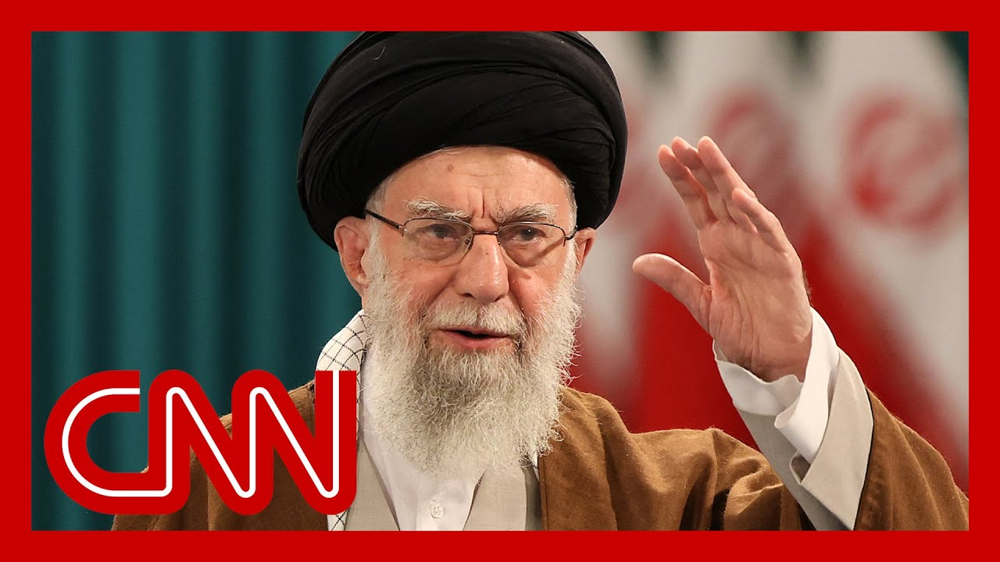

【特朗普称伊朗最高领袖为“容易的目标”】
Summary: The Middle East is on high alert as missiles strike Israel and Iran for a fifth day. Iran launched new attacks, triggering sirens in Israel. Trump left the G7 early, convened security officials, claimed US control of Iran’s skies, and called Iran’s leader an "easy target."
摘要： 中东局势高度紧张，导弹连续第五天袭击以色列和伊朗。伊朗宣布发动新一轮攻击，以色列多地响起防空警报。特朗普提前离开G7峰会，召集国家安全团队商讨局势，并宣称美国完全掌控伊朗领空，同时暗示伊朗领袖是“容易的目标”。

⏱️ Estimated Reading Time: 16 min
📚 六级生词 📚 雅思生词 📚 托福生词 📚 专八生词 📚 SAT生词 📚 考研生词 📚 GRE生词 📚 高考生词
The Middle East is on high alert at this hour as missiles fall across Israel and Iran for a fifth straight day.
中东目前高度戒备，导弹连续第五天袭击以色列和伊朗。
A short time ago, Iranian state media announced the launch of a new wave of attacks.
不久前，伊朗官方媒体宣布发动新一轮攻击。
Air raid siren sounding again today in Tel Aviv and other parts of Israel.
今天，特拉维夫和以色列其他地区再次响起防空警报。
Iran claims that it struck an Israeli military intelligence center in Tel Aviv.
伊朗声称袭击了特拉维夫的一处以色列军事情报中心。
We should note President Trump is now back in Washington after unexpectedly leaving the G7 summit a day early.
值得注意的是，特朗普提前一天离开G7峰会，现已返回华盛顿。
He's convening his national security staff in the white House Situation Room today as the U.S. monitors this rapidly developing conflict.
他今天在白宫战情室召集国家安全团队，以应对迅速升级的冲突。
Just in the past hour, in an extraordinary set of social media posts, the president announced, quote, we emphasis on we now have complete and total control of the skies over Iran.
就在过去一小时，总统在社交媒体发文称，“我们”（强调“我们”）已完全掌控伊朗领空。
Trump also issuing a veiled threat to Iran's supreme leader, claiming that we again, we know where he is hiding and calling Ayatollah Khamenei a, quote, easy target.
特朗普还含蓄威胁伊朗最高领袖，称“我们”知道其藏身之处，并称哈梅内伊为“容易的目标”。
But adding that he is safe for now.
但补充说，他目前安全。
CNN's Alina Trend is live for us at the white House.
CNN的Alina Trend正在白宫为我们直播。
Alina, what more are officials saying about this?
Alina，官员们对此有何进一步说法？
Yeah, I mean, as you said, Boris, a very remarkable set of posts there from the president and what they want to highlight as well.
是的，如你所说，鲍里斯，总统的帖子非常引人注目，他们还想强调一些内容。
Not only did he just say we know exactly where in total harmony, the supreme leader of Iran is in hiding.
他不仅明确表示知道伊朗最高领袖的藏身之处。
But he said that we are not going to take him out.
但他表示“我们”不会除掉他。
Emphasize that he said kill him in parentheses. at least not as not as of now.
强调他说“杀了他”（括号内），至少目前不会。
And then he added that his patience is wearing thin.
他还补充说，他的耐心正在消磨。
And I can tell you, Borge, that's in line with the reporting I've now been hearing from multiple sources who've been familiar with the behind the scenes discussions on this escalating conflict between Iran and Israel.
我可以告诉你，鲍里斯，这与我从多个熟悉伊朗和以色列冲突幕后讨论的消息来源听到的一致。
I would note that over in recent days, really, the president had been kind of fixated on and really pushing for a diplomatic solution to try and end this conflict, he had said publicly.
我注意到，最近几天总统公开表示，他一直专注于推动外交解决方案以结束冲突。
But I also know he said it in private conversations, that he'd been hoping that there could be some sort of deal to be worked out with the Iranians.
但我也知道他在私下谈话中表示，希望与伊朗达成某种协议。
But we are learning now in these conversations I'm having, that the president is actually moving farther away from that idea that he's kind of his desire to handle this diplomatically is beginning to wane.
但我从目前的对话中了解到，总统正逐渐放弃这一想法，他通过外交手段解决问题的意愿正在减弱。
It's still very much unclear. Of course, what the U.S. is going to do moving forward.
目前尚不清楚美国下一步将采取什么行动。
The possibility, I'm told, that the U.S. would go further than they have yet in aiding Israel in trying to wipe out Iran's nuclear capabilities is still on the table again, unclear, though, if they would actually go that far.
我被告知，美国可能进一步协助以色列摧毁伊朗核能力，但尚不确定是否会走到那一步。
You mentioned this with the president is meeting this hour.
你提到总统此时正在开会。
I'm told it's going to kick off any moment now.
我听说会议即将开始。
His meeting in the Situation Room with his top national security officials.
他在战情室与高级国家安全官员会面。
That is the reason I was told that he ended his, trip to Canada at his his presence at the G7 summit so abruptly.
这就是他突然结束G7峰会并离开加拿大的原因。
He wanted to have these discussions in person specifically, of course, as we're seeing you know, this escalating conflict grow even more tense.
他希望能亲自参与讨论，尤其是考虑到冲突正进一步升级。
We know that, the Trump administration has been hearing now from Israel, that Israel is expected to really ramp up some of their attacks on the Iranians in the coming days.
我们知道，特朗普政府已从以色列获悉，以方预计将在未来几天加大对伊朗的攻击。
The president kind of alluded to that when speaking with reporters this morning.
总统今早与记者谈话时暗示了这一点。
All to say we have seen an already very tense conflict become even more precarious.
总之，本已紧张的冲突变得更加危险。
Hopefully we can get you some of the new details we learned as this meeting in the Situation Room kicks off shortly.
希望我们能在战情室会议开始后为你提供最新细节。
CNN's Nick Paton Walsh is with us now.
CNN的Nick Paton Walsh现在与我们连线。
So, Nick, how are these threats likely to be received by Iran's leadership?
Nick，伊朗领导层会如何回应这些威胁？
Yeah, I mean, it is extraordinary, isn't it, in sort of one breath simultaneously saying we're not going to kill you for now, will then demanding the unconditional surrender, it seems, of Iran's leadership, if not Iran itself.
是的，这很特别，一方面说“目前不会杀你”，另一方面似乎要求伊朗领导层（甚至伊朗）无条件投降。
I very much doubt that Iran's leaders are going to read that and feel that they have to suddenly turn themselves in, and indeed how that would even function.
我非常怀疑伊朗领导人会因此突然自首，甚至不清楚这如何实现。
I don't really know, given Tehran is simultaneously being told to evacuate by the Israeli government, echoed by President Trump as well.
尤其是以色列政府和特朗普还同时要求德黑兰撤离。
I think it again focuses this particular moment is of exactly what sort of off ramp does Iran try and find for itself here?
我认为这再次凸显伊朗当前试图寻找何种退路。
We know that its foreign minister has been on the phone to the United Kingdom, Britain and, sorry, United Kingdom, France and Germany in the past hours, potentially exploring diplomatic routes again.
我们知道，伊朗外长过去几小时与英国、法国和德国通话，可能再次寻求外交途径。
Although keen to emphasize how Iran still wants retaliation for Israeli strikes.
尽管伊朗仍强调要对以色列的袭击进行报复。
But it's also clear and repeated by Donald Trump again today that Israel has air superiority in Iran at the moment.
但特朗普今天再次明确表示，以色列目前拥有伊朗上空的制空权。
In fact, Donald Trump choosing to say the word we when he referred to that control of the skies.
事实上，特朗普用“我们”一词指代对领空的掌控。
So we're at a point now where it looks like the United States is trying to sort of tease, to some degree, the possibility of it maybe getting more involved or becoming, some sort of rhetorical, play within this particular conflict, even though just a matter of days ago, Trump was clear he didn't want Israel to attack Iran.
因此，美国似乎在试探进一步介入或在此冲突中扮演某种修辞角色，尽管几天前特朗普还明确表示不希望以色列攻击伊朗。
But I think Iran now dealing with a very complex moment.
但我认为伊朗正面临非常复杂的局面。
We've been looking at some reporting about how many potentially missiles it has left that could indeed reach Israel.
我们查阅了一些报道，了解伊朗还有多少导弹能真正打到以色列。
They've slowed their tempo in the last days.
过去几天，他们的攻击节奏已放缓。
Only 30 fired overnight.
昨晚仅发射了30枚。
Not many, if any, got through at all.
即使有，也很少突破防御。
Some suggestions from experts that possibly Iran might have anything between 300 and 1300 of the 2000 or so that could reach, Israel or left.
专家推测，伊朗可能仅剩300至1300枚能打击以色列的导弹（原约2000枚）。
That puts it very much down to depleted stocks that will leave them deeply anxious about their ability to have a deterrent going forward.
这显示其库存严重不足，令其对未来的威慑能力深感焦虑。
And so I think there's also now a remaining question about the enrichment program, the Fordow plant buried in the mountain, whether or not the United States, assists Israel with its bunker buster bombs to hit that a lot clearly in play here.
因此，另一个问题是美国是否会协助以色列用钻地弹打击山中的福尔多浓缩设施。
But the United States significantly more involved rhetorically through these, Trump posts than it has been in the past days.
但通过这些帖子，美国在言辞上的介入比过去几天明显增多。
Remarkable developments just as Iran appears weakest.
在伊朗显得最虚弱时，事态出现了显著变化。
Certainly, and Iran is now urging residents to stop using apps like WhatsApp and telegram, citing recent assassinations.
确实，伊朗还以近期刺杀事件为由，敦促居民停用WhatsApp和Telegram等应用。
Tell us about this warning.
请谈谈这一警告。
Yeah, I mean, extraordinary to say to people, essentially to stay clear of the two most popular social media and messaging apps, in Iran now, many have been wondering exactly how it's been that Israel, with such precision, appears to have targeted, many military leaders.
是的，这很特别，伊朗要求民众避开国内最流行的两款通讯应用。许多人猜测以色列如何精准锁定军事领导人。
It seems so many of the pictures we've seen of apartment blocks hit an upscale parts of Tehran as they slept, hitting the rooms that they may well have been in.
我们看到许多德黑兰高档公寓遭袭的照片，袭击似乎精确击中了目标可能所在的房间。
Now, many would point towards cell phones potentially, being how they got that kind of tracking. perfected, civilian casualties, too, I should point out, during some of these strikes.
许多人认为手机可能是追踪手段，但也需指出这些袭击中也有平民伤亡。
But now a broader suggestion to stay off those apps, is that also potentially part of the Iranian regime trying to find some way of preventing opposition organizing in the days ahead?
但更广泛的禁用建议是否也是伊朗政权试图阻止反对派组织活动？
Look, I think it's fair to say that inside the capital, Tehran, at least, the focus is on trying to avoid or get away from Israeli airstrikes rather than change, government, despite that becoming increasingly one of Israel's talking points.
我认为，至少在德黑兰，重点是躲避空袭而非政权更迭，尽管后者正成为以色列的论点之一。
But yeah, remarkable sign, frankly, of how penetrated Iran has been that its government is simply saying stay off your key parts of the internet to their population, a real sign, I think, of this critical moment for Iran as a regional power, even though that phrase, frankly, seems obsolete now.
但这确实表明伊朗被渗透的程度——政府直接要求民众远离关键网络应用，这显示出伊朗作为地区大国的关键时刻，尽管这一说法现在可能已过时。
Brianna.
Brianna。
Yeah. And as so many people are trying to escape the capital, we see the highways there just packed with cars heading out of town.
是的，许多人正逃离首都，高速公路挤满了出城的车辆。
Nick Paton Walsh, thank you very much for the reporting.
Nick Paton Walsh，非常感谢你的报道。
Joining me is Brett McGurk, CNN's global affairs analyst and a former member of the US National Security Council, where he served as Middle East and North Africa coordinator.
现在加入我们的是CNN全球事务分析师、美国国家安全委员会前中东和北非协调员Brett McGurk。
Brett, it's so great to have you on, especially now given the fast pacing developments that we are seeing in the Middle East.
Brett，很高兴你能来，尤其是中东局势快速发展的当下。
I want to get you to respond to this post on Truth Social just moments ago from President Trump.
请回应当前总统特朗普在Truth Social上的最新发文。
We now have complete Iran had good sky trackers and other defensive equipment and plenty of it, but it doesn't compare to American made, conceived and manufactured stuff.
“我们已完全掌控伊朗——他们虽有良好的防空设备，但无法与美国制造相比。”
Nobody does it better than the good ol USA.
“没人比美国做得更好。”
how do you interpret that, Brett?
你如何解读这段话，Brett？
Because to me, it doesn't sound like somebody who's eager to get back to the negotiating table.
因为在我看来，这不像渴望重返谈判桌的人说的话。
Perhaps, but I don't know. You're the expert here.
或许吧，但你是专家。
beyond is great to be here. Harry's a tough act to follow, but, Look, reacting to every, true social post is, fraught with challenges, because one thing could change.
很高兴来到这里。Harry的解读很难超越，但回应每条Truth Social帖子都充满挑战，因为情况可能瞬息万变。
But, look, there's a clear trend line here in the white House policy.
但白宫政策有明显趋势。
I think it's very clear. they have said, what they have done.
我认为很明确——他们言行一致。
They laid down an offer to Iran that they consider a very fair deal on the nuclear, problem.
六周前，他们向伊朗提出了自认非常公平的核问题协议。
That was about six weeks ago.
伊朗未回应，反而升级了核计划。
Iran really did not answer and in fact escalated its program in response.
以色列已开始军事行动。
And we are now, the Israelis have begun this military campaign.
白宫已明确告知伊朗：要么回到谈判桌接受提议，要么面对持续的军事打击。
So the white House has been very clear to Iran, either go back to the table with the offer we put down or face the continuation of this military campaign.
过去24小时的新进展是美国可能军事打击深埋地下的福尔多浓缩设施。
And what is new now in the last 24 hours is a very real possibility that the United States military will act to take out the deeply, buried Fordo enrichment facility, which has ten cascades, spinning a very advanced centrifuges.
该设施有十组先进离心机在运行。
So that's where we are.
这就是当前局势。
I think what the president is doing in his statements today is reminding Iran this is really coercive diplomacy in the extreme, reminding Iran, Iran, you do not control your skies.
我认为总统今天的声明是对伊朗的极端胁迫外交，提醒伊朗：你们不掌控自己的领空。
the Israeli Air Force is over. Your skies can strike at will.
以色列空军可在你们领空随意打击。
the United States military is a very close partner of the Israelis.
美军是以色列的紧密伙伴。
We are not, as far as I know, involved in any sort of offensive operations, against Iran.
据我所知，我们未参与对伊朗的进攻行动。
But we are helping to defend and protect Israel.
但我们正协助保卫以色列。
But that can change.
但这可能改变。
So basically, Iran onus is on you.
因此，伊朗的责任在于你们自己。
Let's come back to the table.
回到谈判桌吧。
Accept the deal that we put down.
接受我们提出的协议。
That's the off ramp or else this is going to get worse.
这是退路，否则局势会恶化。